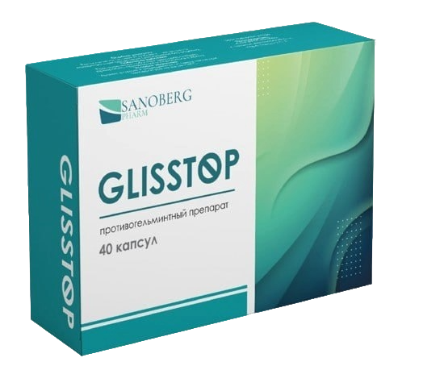
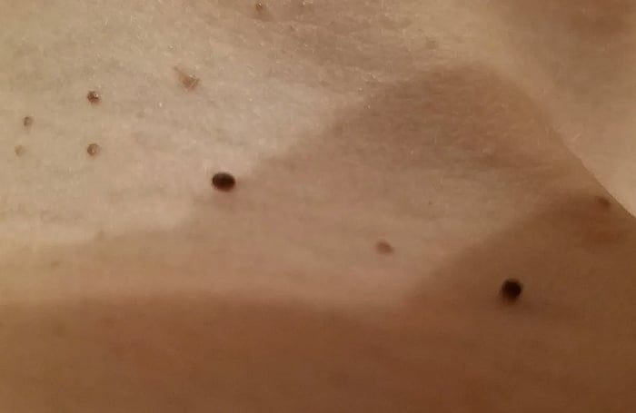
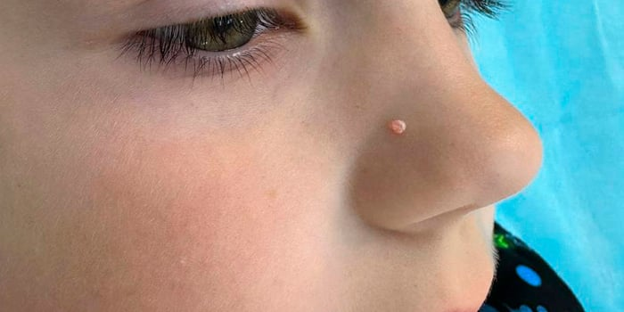
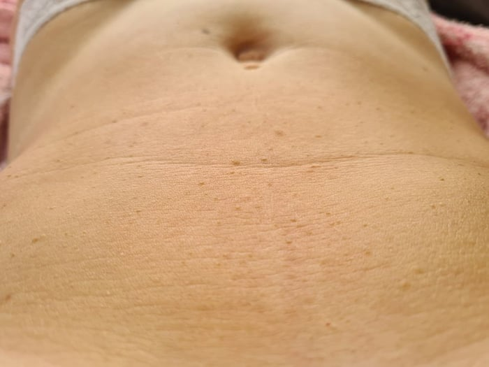
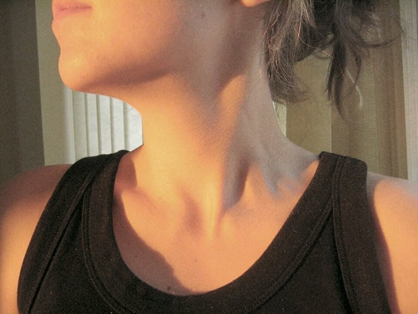
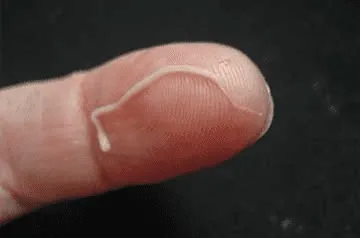

Привет всем в моём блоге! Я Наталья, и я мама трёх прекрасных деток: старшей дочки Верочки, сына Саши и маленького Тимофея, который ещё совсем грудничок. У нас в семье всё было прекрасно, пока год назад в ней не появились они... ПАРАЗИТЫ! А с ними — ПАПИЛЛОМЫ, РЕЗУЛЬТАТ ДЕЯТЕЛЬНОСТИ ПАРАЗИТОВ!
Хочу поделиться историей испытаний, которых не пожелаешь и врагу. И я думаю, то, что сейчас расскажу тут, будет полезно и поучительно для многих.
? Откуда взялись папилломы в нашей семье?
! Как связаны паразиты и высыпания на коже?
✓ Чем мы в итоге спаслись — и где это средство найти?
Казалось бы, причём тут папилломы? Ерунда, косметический дефект. Ну, вылезла родинка — прижёг и забыл. Как же я ошибалась.
Я всё ещё вздрагиваю, когда вспоминаю прошлое лето. У нашей любимой дочки Веры был ВЫПУСКНОЙ! Одиннадцатый класс, последний звонок, платье, воспоминания на всю жизнь. Но реальность оказалась другой — ад, паника и бессонные ночи. В общем, рассказываю по порядку.
Началось всё за три месяца до выпускного
Мы готовились к этому дню за полгода. Платье — небесно-голубое, воздушное, мы объехали полгорода, нашли идеальное. Выбрали туфли, записались в салон на причёску, маникюр и педикюр... И за три месяца до этого «дня икс» в нашу жизнь пришли ОНИ.
Сначала я заметила у себя на шее противный отросток. Потом ещё один. Думала — стресс. Потом у Вити на плече вылезла грубая бляшка. А когда Вера подошла ко мне и отвела волосы... У неё на шее, прямо там, где будет висеть мамина фамильная подвеска, обнаружилась россыпь папиллом. Уродливые, мешающие.

Так выглядела шея дочки!
Врачи, мази и ноль результата
Мы начали мазать, прижигать их (ни в коем случае не повторяйте!), но они лезли с новой силой. У мужа начались бессонница и дикая раздражительность (у него кожа горела), у меня — тяжесть в животе, у Веры появился этот ужасный кислый запах от тела. Ей было стыдно.
Она примеряла платье и плакала. Платье — мечта — висело на чехле, а Вера кричала: «Мама, я уродина! Я не пойду, никто не смотрит на платье, все будут смотреть на мою шею!»
Потом у младшего, Саши, появилась большая папиллома прямо на носу! Он постоянно говорил, что кожа чешется и будто «горит», мы с мужем поняли — дело серьёзное.

Папиллома у нашего сына
У мужа самого уже вся шея и спина была в этих наростах, грубых, телесных, а на груди — как будто россыпь. И тут я поняла — это катастрофа.
Мази действовали какое-то время. Но через 2–3 дня всё вылезало заново, как будто корень сидит глубже.
У дочки стало хуже — мы были в шоке
Мне было очень жаль Верочку... Скоро предстоял важный день, а она буквально возненавидела своё отражение в зеркале. Я ей постоянно говорила (больше для успокоения): «Да ерунда это всё, Вер, мы справимся, вылечим до выпускного, не накручивай» . А она со слезами на глазах терпела, молчала, мазала тем, что в аптеке мы купили.
Но однажды вечером она сняла футболку — и я реально испугалась.
На животе и груди — россыпь маленьких папиллом, некоторые потемневшие. Она делала вид, что всё нормально, но я видела: ей неприятно, кожа стянулась, высушилась. Говорит: сначала чесалось, потом начало жечь, а главное, с каждым днём становилось больше.

Живот моей дочки
Мы срочно поехали к врачу. И там нам сказали прямо, без церемоний:
«Наталья, это не просто папилломы. Это паразитарная интоксикация. Глисты живут в организме, отравляют кровь, а иммунитет сдаётся. Папилломы — это флажки опасности. Процесс зашёл глубоко. Если ничего не делать, инфекция пойдет внутрь. Прощай, выпускной. Ваша дочь будет лечиться, а не танцевать»
Я села в коридоре и завыла. Муж схватился за голову. Дети плакали. Вера была в шоке... Мне казалось, что жизнь кончена. Воспоминания на всю жизнь? Да, только моя дочка будет вспоминать о том, как она пропустила свой последний вечер с одноклассниками!
Я сидела и плакала прямо в коридоре. Муж держался, но я видела — ему страшно не меньше. За себя, за меня, за наших деток.
И именно тогда я поняла — мазями тут уже не обойдёшься. Корень проблемы был внутри. И времени у нас почти не осталось...
Надежда пришла от подруги
Однажды, уже на пределе, я поделилась нашей бедой с подругой. Говорю: «Я не знаю, что делать. Папилломы лезут у всех, мази не помогают, врачи не говорят ничего конкретного, только пугают...»
А она отвечает:
— Слушай, у нас была похожая история! У мужа прямо на лице вылезли. Думали уже удалять. Но нас спас один врач — старой школы, очень толковый. Он сказал: «Всё изнутри идёт. Надо убирать не снаружи, а из организма».
— И что вы делали? — спрашиваю.
— Он посоветовал GLISSTOP. Натуральное средство против паразитов, которые как раз и провоцируют появление папиллом, бородавок, сыпи и кожных наростов.
Мы, конечно, сразу побежали к этому врачу.
И он сказал дословно:
«Слава Богу, вы не затянули. Удалять ничего не надо — это уже прошлый век. Сейчас есть
GLISSTOP — мощный комплекс против паразитов. Очищает организм, и папилломы
начинают сами отсыхать и отпадать.
Глупо, что о нём до сих пор молчат — но он
работает лучше всего, что я видел за 40 лет практики».
Мы чуть не расплакались от облегчения... но не всё так просто
Когда врач сказал, что удалять ничего не нужно и можно обойтись без боли, крови, шрамов и высоких рисков — у нас с мужем реально слёзы на глазах навернулись.
Но доктор сразу нас предупредил:
«В аптеках вы GLISSTOP не найдёте. Там просто невыгодно продавать то, что лечит с первого раза. Аптекам нужно, чтобы вы возвращались снова и снова — за мазями, спреями, таблетками... А это средство реально очищает организм и убирает причину папиллом — паразитов. Фармкорпорациям это не нужно. Поэтому на полки не пускают действующие средства. Обнаглели вконец!»
Врач оказался настоящим человеком — дал нам официальный сайт, где средство можно заказать напрямую у поставщика, без наценок и аптечных накруток.
GLISSTOP — это натуральный препарат для борьбы с папилломами. Он разработан на основе растительных экстрактов с повышенной концентрацией активных компонентов.
Состав — 100% натуральный
| Экстракт травы полыни горькой обладает мощными антипаразитарными свойствами, способствует уничтожению гельминтов и других паразитов, нормализует пищеварение и оказывает противовоспалительное действие. | |
| Экстракт монарды известен своими антибактериальными и противогрибковыми свойствами, помогает бороться с инфекциями и укрепляет иммунную систему. | |
| Экстракт чистотела очищает организм от токсинов, обладает антимикробным и противовирусным эффектом, способствует выведению продуктов жизнедеятельности паразитов. | |
| Экстракт солянки холмовой снимает интоксикацию, поддерживает работу печени и желчного пузыря, стимулирует процессы регенерации и выведения шлаков. | |
| Экстракт хвоща полевого обладает мочегонным и противовоспалительным эффектом, способствует очищению организма, выводит соли тяжёлых металлов и паразитов. | |
| Экстракт корней лопуха укрепляет иммунитет, помогает нормализовать обмен веществ, обладает антибактериальными и очищающими свойствами. | |
| А также экстракты плодов рябины красной и черноплодной, концентрированный яблочный сок и лимонная кислота. | |
Применение GLISSTOP способствует комплексному очищению организма и удалению папиллом в несколько этапов.
КУРСОВОЕ ПРИМЕНЕНИЕ СПОСОБСТВУЕТ:
✓ постепенному высыханию и отпадению папиллом без боли и шрамов;
✓ снятию воспаления, зуда и неприятных ощущений на коже;
✓ заживлению поврежденных участков и восстановлению чистого кожного покрова;
✓ очищению организма от паразитов — основной причины образования папиллом;
✓ укреплению иммунитета и предотвращению повторного заражения.
Полный курс лечения — два месяца. Именно за этот срок организм полностью очищается от паразитов, и кожа восстанавливается. Папилломы исчезают полностью — без боли, без следов, без операций.
Принимать GLISSTOP необходимо по инструкции: содержимое одной монодозы (2,5 мл) развести в 100 мл воды и использовать внутрь по одной монодозе два раза в день, через час после еды.
Мы заказали GLISSTOP на всю семью. Пришёл быстро. Начали принимать.
И знаете что? Уже через две недели папилломы начали засыхать, кожа стала чище, зуд и жжение ушли. Решила подробно описать, как шло восстановление весь 60-дневный курс.
011–2 неделяС каждым днём папиллом становилось всё меньше и меньше. Они засыхали и постепенно отваливались. Маленькие быстрее, те, что крупнее, дольше засыхали. Но отпали все!!! Даже следов не осталось. За две недели кожа стала чистая! Я поверить не могла!
023–4 неделяИсчезла слабость, увеличилась работоспособность. Стало больше энергии. Перестала уставать.
035–6 неделяЖивот перестал болеть, стул наладился. Раньше постоянно изжога и отрыжка мучили, а сейчас ничего этого нет. В туалет стала как по расписанию ходить утром, ни запора, ни поноса. И пищеварение наладилось.
047–8 неделяУшла отёчность, нормализовалось давление и по ощущениям стабилизировался сердечный ритм. Всё это привело к улучшению общего состояния организма.

Папилломы на теле Веры стали серыми, сморщились. Она плакала уже от счастья. Спустя 2 месяца все папилломы просто... отпали. Осталась чистая, розовая кожа.
И всё-таки Вера пошла на выпускной!
Я до сих пор плачу, когда вспоминаю. Она надела то платье. Мы сделали фотосессию на школьном дворе. Она была настоящей принцессой. И ни один человек на том выпускном не знал, через какой ад мы прошли.
А надо было всего-навсего понять, что папилломы — это не приговор, а сигнал о том, что внутри завелись гости. И выгнать их. Всей семьёй.
Сейчас у нас всё хорошо. GLISSTOP стоит в нашей домашней аптечке. Но тем, кто сейчас читает и мучается — не ждите, пока папилломы перечеркнут жизнь вашего ребенка. Действуйте.
Если бы не GLISSTOP, дочка осталась бы без праздника, а вся семья без здоровья. Слава Богу, что нашлось это средство и спасло нас!
Вот ссылка на официальный сайт, где мы заказывали препарат GLISSTOP. Там сейчас, кстати, проходит акция — розыгрыш скидок, так что у вас есть возможность приобрести его ещё и по очень выгодной цене! Поэтому меньше думайте, быстрее заказывайте.
Решайте проблему сразу, не тяните. Мы вылечили всю семью за два месяца. Без боли. Без операций. Без бешеных трат. И всё благодаря GLISSTOP!
Берегите своё здоровье и своих близких ❤️
Производитель GLISSTOP запустил акцию, в рамках которой каждый желающий может выиграть большую скидку на покупку GLISSTOP и таким образом приобрести средство по крайне выгодной цене!
ДЛЯ УЧАСТИЯ НУЖНО НАЖАТЬ НА ОДНУ ИЗ МАТРЁШЕК, И ВЫ ВЫИГРАЕТЕ СВОЮ СКИДКУ!
Но лучше поторопиться, потому что акция продлится до 29 июля 2026 г. включительно.
📋 Условия участия в розыгрыше GLISSTOP
1. Быть жителем РФ старше 18 лет.Средство по льготной стоимости распространяется только среди совершеннолетних жителей РФ.
2. Приобретать только для личного использования.Это нужно для борьбы с перекупщиками.
3. Принять участие в розыгрыше от производителя.В связи с ограниченным количеством продукта средство реализуется через официальный розыгрыш — размещён ниже на странице.
ВАЖНО! Клинические наблюдения показывают, что июль и август — лучшее время для начала очищения организма от паразитов. В этот период организм функционирует в более стабильных сезонных условиях: активизируются обменные процессы, а иммунная система работает стабильно. Благодаря этому значительно повышается эффективность применения средства GLISSTOP. Уничтожение паразитов и очищение организма происходят до 76% быстрее, чем в другое время года.
В коробке вы найдёте 7 сверхэффективных ампул, формат которых обеспечивает точность дозировки и простоту в применении.
